Financial markets are characterized by low signal-to-noise ratios, high volatility, and non-stationary dynamics. Deep Reinforcement Learning (DRL) is theoretically well-suited for sequential trading decisions because it optimizes for cumulative future rewards rather than immediate prediction accuracy. However, standard DRL algorithms often fail in real-world deployment due to their inability to capture time-series momentum, their blindness to drawdown risk, and their tendency to generate high-turnover policies that succumb to transaction frictions. This BTP-1 project conducts a controlled empirical investigation to systematically evaluate the architectural and reward-design mechanisms required to stabilize a Proximal Policy Optimization (PPO) agent for daily equity trading.
Zou et al. (2023) link
Huang et al. (2024) link
Liu et al. / FinRL-Meta (2024) link
Millea (2021) link
Wang & Liu (2025) link
Main Research Question: How do temporal memory, dense risk-adjusted reward shaping, and turnover regularization independently and cumulatively affect the risk-adjusted out-of-sample performance of a PPO-based daily trading agent?
This translates into three specific, testable hypotheses:
A Novel Deep Reinforcement Learning Based Automated Stock Trading System Using Cascaded LSTM Networks
Although deep reinforcement learning has shown promise for automated stock trading, existing approaches remain constrained by the noisy, unstable, and highly dynamic nature of financial market data. Prior machine learning models are also prone to overfitting, which reduces their generalization ability in real trading environments. In addition, reinforcement learning methods originally developed for gaming are not directly adaptable to financial data with low signal-to-noise ratios and uneven market behavior, which leads to performance limitations. Even in the proposed cascaded LSTM-PPO framework, further improvement still depends on unresolved issues such as the need for larger training datasets and more effective reward functions to improve stability and control pullback risk. Therefore, a clear research gap remains in developing more robust deep reinforcement learning trading systems that can better handle noisy financial data, generalize reliably, and achieve improved risk-adjusted performance
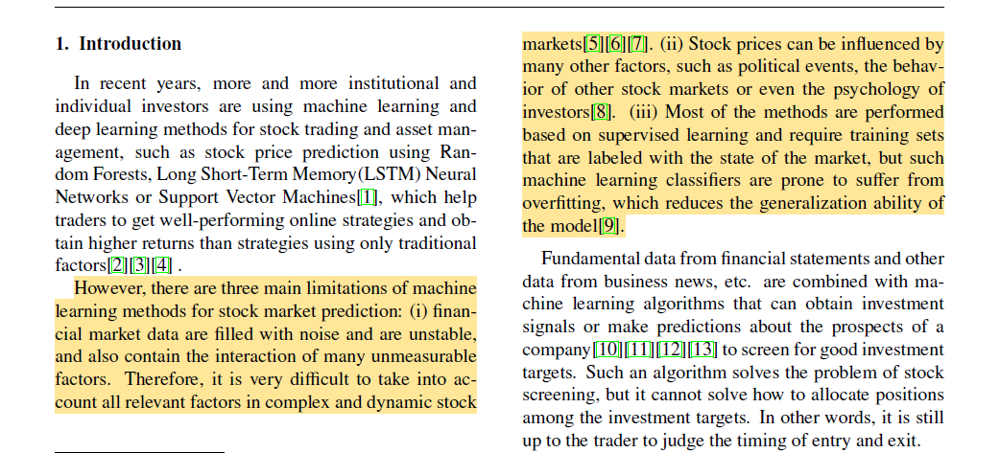
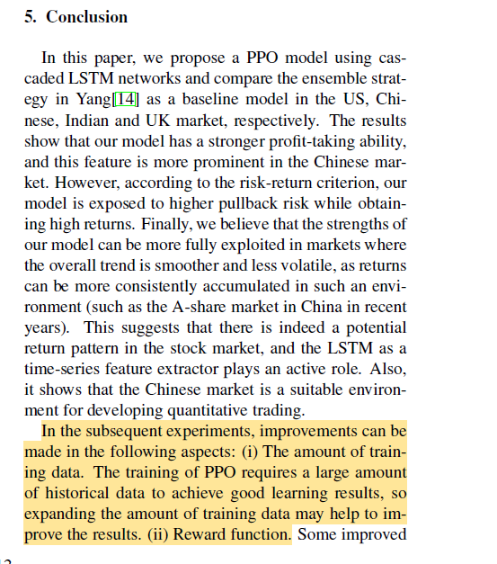
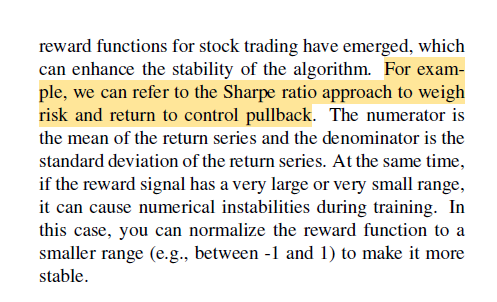
A Self-Rewarding Mechanism in Deep Reinforcement Learning for Trading Strategy Optimization
Huang et al. (2024) investigate adaptive/self-rewarding mechanisms, showing that reward design can substantially affect trading performance and mitigate risk.
Existing DRL trading systems mostly use static, manually designed reward functions, which do not adapt well to unstable and changing financial markets
The unresolved problem is how to build a dynamic reward mechanism that can adjust during learning and remain responsive to market changes
This paper addresses that gap by proposing a self-rewarding RL framework that combines expert labels with learned reward prediction
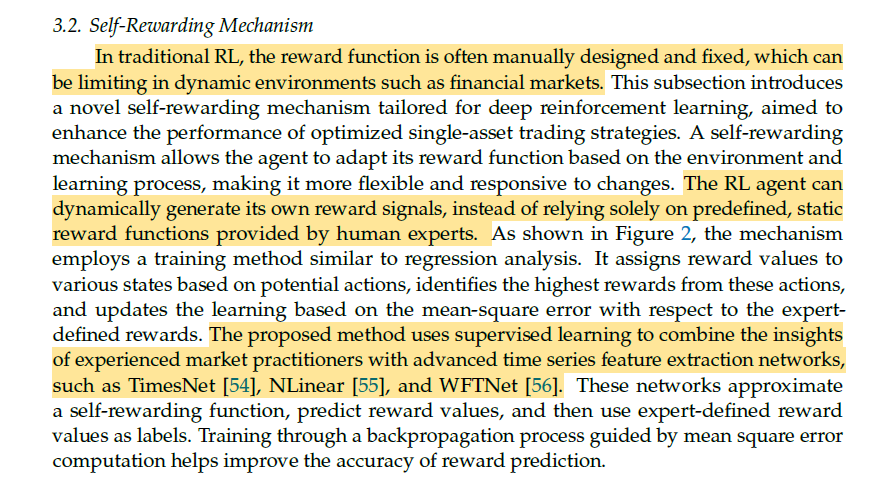
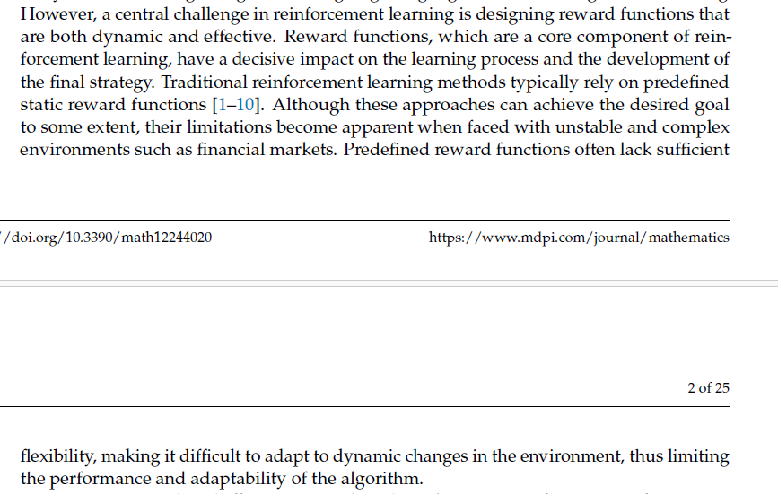
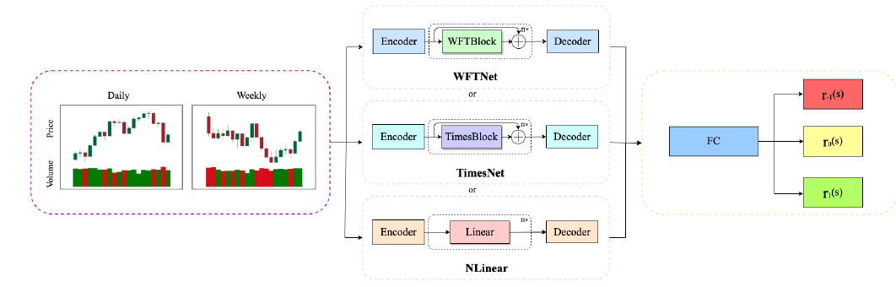
Deep Reinforcement Learning for Trading—A Critical Survey
Despite increasing interest in deep reinforcement learning for financial trading, the literature remains methodologically inconsistent and difficult to compare across studies. Existing works frequently use different datasets, different time periods, and different preprocessing techniques, which makes it difficult to determine whether reported performance differences are caused by the learning algorithm itself or by variation in the input data. In addition, only a limited number of studies examine model performance across multiple market types, leaving the generalizability of DRL-based trading systems insufficiently understood. Reproducibility is further weakened by the limited availability of source code and the incomplete reporting of implementation details such as hyperparameters and network architecture. Therefore, an important research gap remains in developing more standardized, comparable, and reproducible evaluation practices for DRL-based trading research
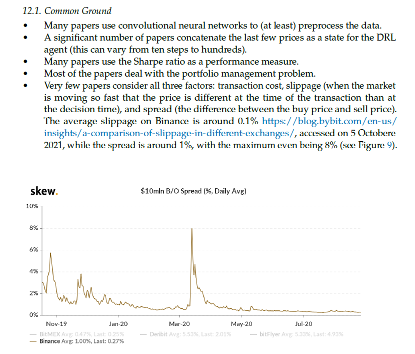
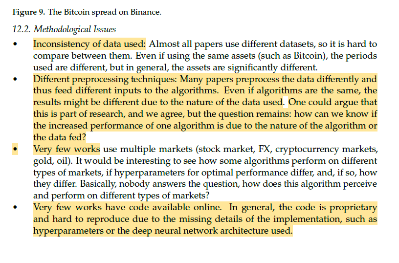
Dynamic datasets and market environments for financial reinforcement learning
Despite progress in financial reinforcement learning, existing studies still rely heavily on historical backtesting environments that may not represent real market conditions adequately. This creates a simulation-to-reality gap, where strong backtest results do not necessarily translate into robust live trading performance. The literature identifies several unresolved data-centric challenges, including survivorship bias, low signal-to-noise ratio, and model overfitting, which continue to limit the reliability and real-world deployment of FinRL agents
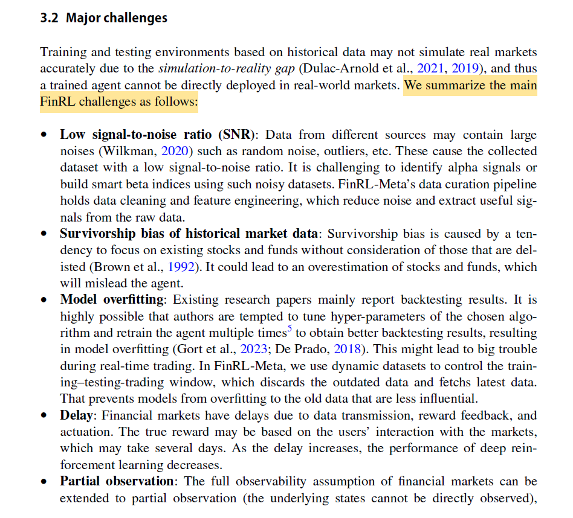
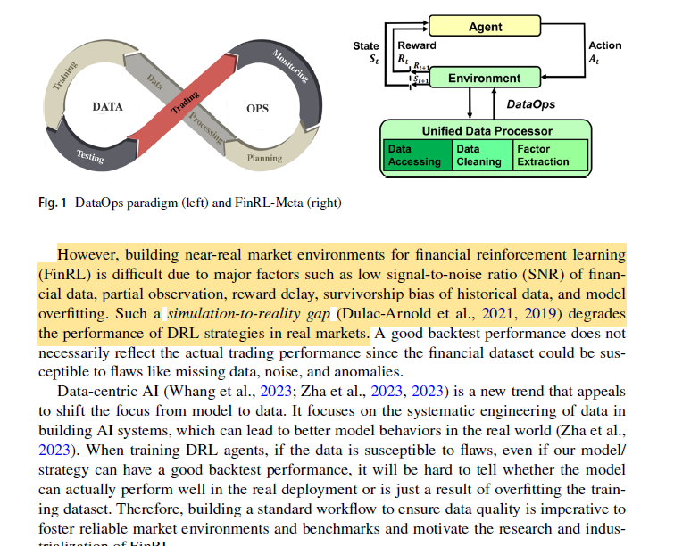
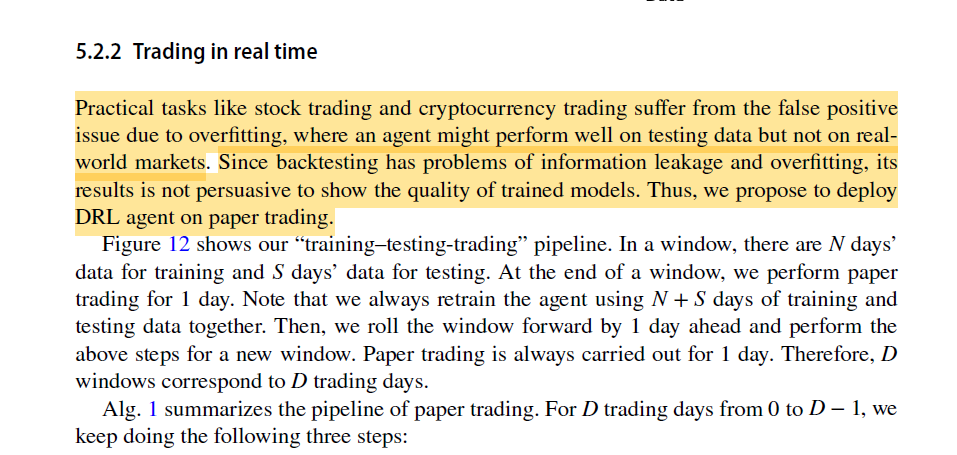
Risk-Sensitive Deep Reinforcement Learning for Portfolio Optimization
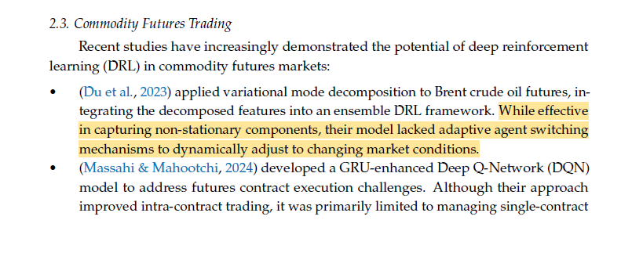
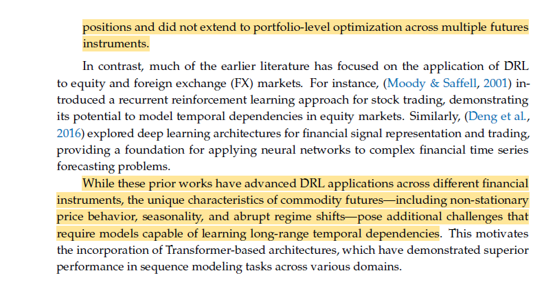
Taken together, the reviewed studies address important but largely separate aspects of DRL-based financial trading:
Zou et al. (2023) demonstrate the benefit of LSTM-based temporal memory for PPO trading by using historical sequences to capture temporal information. However, their framework mainly relies on return-based rewards, which do not directly account for risk measures such as variance or drawdown.
Huang et al. (2024) address the limitation of static reward functions by introducing a self-rewarding mechanism that combines expert labels with learned reward prediction. This shows the importance of reward design, but the approach replaces the reward mechanism rather than isolating the effect of a mathematically defined risk-adjusted reward such as the Differential Sharpe Ratio (DSR).
Millea (2021) highlights the problem of inconsistent experimental settings in DRL trading research, where studies often use different datasets, time periods, preprocessing methods, friction assumptions, and evaluation procedures. This makes it difficult to determine whether performance improvements come from the algorithm or from differences in the experimental setup.
Liu et al. (2024) address the need for more realistic and reproducible financial RL experiments through dynamic datasets, realistic market environments, and rolling training-testing-trading evaluation. However, their main contribution is focused on the environment and evaluation pipeline, rather than isolating the contribution of advanced risk-aware reward mechanisms.
Wang & Liu (2025) demonstrate adaptive risk-sensitive decision-making under changing market conditions. However, their framework does not separately isolate the contributions of temporal memory, reward shaping, and turnover control within a single controlled ablation.
These studies therefore motivate three important directions:
(1) temporal memory, (2) risk-aware reward design, and (3) turnover regularization.
However, among the studies reviewed for this project, we did not find a controlled experimental framework that isolates these mechanisms incrementally within the same PPO trading environment. In particular, their separate contributions are not systematically decomposed under identical data, cost assumptions, training conditions, and evaluation metrics.
Therefore, this BTP-1 proposes a controlled four-stage ablation:
to empirically quantify the incremental effect of each mechanism on return, risk-adjusted performance, drawdown, turnover, and cost-adjusted trading stability.
| Paper | Main Idea | Dataset/Market | State | Action | Reward | Key Finding | Limitation Relevant to BTP-1 |
|---|---|---|---|---|---|---|---|
| Millea (2021) | Survey of DRL in trading & market mechanics. | Crypto / Stocks / FX | Various (OHLCV, LOB) | Discrete & Cont. | Sharpe, PnL, Sortino | Identifies major inconsistencies in data, friction, and evaluation. | Meta-analysis; highlights the need for strict ablation & friction-control. |
| Zou et al. (2023) | Cascaded LSTM-PPO for automated trading. | US, CN, IN, UK Stocks | 181-dim (Prices, MACD, RSI, etc.) | Discrete (Shares) | Net Return | LSTM feature extractor outperforms ensemble & flat methods (TW=30, HS=512). | Relies on absolute profit reward; blind to variance/drawdown risk. |
| Liu et al. (2024) | DataOps pipeline and dynamic walk-forward environments. | Dow 30, S&P 500, Crypto | Balances, Prices, Tech Indicators | Continuous (Weights) | Asset value change | RLOps standardizes environments, reducing simulation-to-reality gap. | Standard baselines lack advanced online risk-aware reward functions. |
| Huang et al. (2024) | Self-rewarding mechanism blending expert labels. | DJI, IXIC, SP500, HSI | OHLCV | Discrete | Sharpe, Min-Max | Self-rewarding significantly beats fixed formulaic rewards. | Replaces rather than regularizes reward; relies on predefined expert labels. |
| Wang & Liu (2025) | ART-DRL: Adaptive risk-sensitive DRL. | Equities | Market/Tech Features | Continuous | Adaptive Risk | Dynamically shifts risk sensitivity based on market regime. | Focuses on adaptive risk sensitivity but does not isolate the independent contribution of temporal memory versus reward shaping in a controlled ablation. |
To ensure strict comparability, all four models will be trained and evaluated in the exact same simulated environment:
MDP / POMDP Formulation: Because financial markets are heavily influenced by unobservable latent factors, a standard MDP $(\mathcal{S}, \mathcal{A}, \mathcal{P}, \mathcal{R}, \gamma)$ is insufficient. The temporal information motivates a Partially Observable MDP (POMDP), formulated as $(\mathcal{O}, \mathcal{A}, \mathcal{P}, \mathcal{R}, \gamma)$, where the agent receives observations $o_t \in \mathcal{O}$ and utilizes an RNN (LSTM) to maintain a hidden belief state $h_t$ approximating the true market state.
The observation vector $o_t$ provided to the agent strictly contains data available at decision time $t$ (no look-ahead bias). It is divided into:
The action space $\mathcal{A}$ is a continuous vector $a_t \in [-1, 1]^N$ corresponding to the $N$ assets in the portfolio.
To prevent inconsistent gross-vs-net discrepancies and double-counting, the cost model is defined exactly once and applies to all four models.
Architecture: Memoryless feed-forward Multi-Layer Perceptron (MLP) for both the actor $\pi_\theta(a_t|s_t)$ and critic $V_\phi(s_t)$ networks.
State Input: Only the current step observation $s_t$.
Reward: Direct net return, $r_t = R_{\text{net}, t}$ (Liu et al. 2024, §3.1, p. 10).
Objective: Standard Generalized Advantage Estimation (GAE) where $\hat{A}_t = \delta_t + (\gamma\lambda)\delta_{t+1} + \dots$ and $\delta_t = r_t + \gamma V_\phi(s_{t+1}) - V_\phi(s_t)$. The actor is updated using the clipped surrogate objective:
$$L^{\text{CLIP}}(\theta) = \hat{\mathbb{E}}_t \left[ \min\left( \rho_t(\theta)\hat{A}_t, \text{clip}\left(\rho_t(\theta), 1-\epsilon, 1+\epsilon\right)\hat{A}_t \right) \right]$$
Mechanism Added: Temporal memory (LSTM) to handle POMDP nature of financial data.
Architecture: Observation window $F_t = [s_{t-W+1}, \dots, s_t]$ is passed through an LSTM. The hidden state $h_t$ and cell state $c_t$ update recursively:
$$h_t, c_t = \text{LSTM}_{\text{cell}}(s_t, h_{t-1}, c_{t-1})$$
Conditioning: The policy and value functions are now conditioned on the hidden representation: $\pi_\theta(a_t | h_t)$ and $V_\phi(h_t)$.
Parameters: Rather than arbitrary tuning, we strictly adopt the architecture validated by Zou et al. (2023, §4.5.1 & §4.5.2, p. 9): Time Window ($W$) = 30, Hidden Size (HS) = 512.
Reward: Direct net return, $r_t = R_{\text{net}, t}$.
Zou et al. 2023, "A Novel DRL Based Automated Stock Trading System...", p. 9
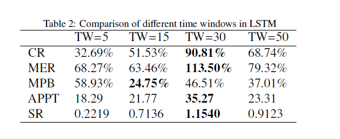
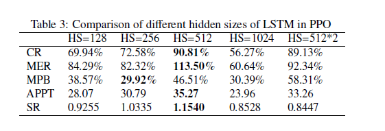
- Purpose: Justifies the direct adoption of the LSTM baseline variables without needing to re-tune from scratch.
Mechanism Added: Dense, risk-aware online reward. Standard profit rewards (M1 & M2) are blind to variance and drawdown risk.
Formulation: Standard Sharpe requires a full episode to compute, causing sparse delayed rewards. Following Millea (2021, §5.1.2, p. 8, Eq. 6 & 7), we use exponential moving estimates for the first moment ($A_t$) and second moment ($B_t$) of the net returns $R_{\text{net}, t}$:
$$A_t = A_{t-1} + \eta (R_{\text{net}, t} - A_{t-1})$$
$$B_t = B_{t-1} + \eta (R_{\text{net}, t}^2 - B_{t-1})$$
Expanding the Sharpe ratio via a Taylor series yields the online DSR step-reward:
$$D_t = \frac{B_{t-1}\Delta A_t - \frac{1}{2}A_{t-1}\Delta B_t}{(B_{t-1} - A_{t-1}^2 + \varepsilon)^{3/2}}$$
Parameters: $\eta \in (0,1]$ is the DSR moving-average adaptation rate, strictly distinct from the PPO discount factor $\gamma$. $\varepsilon$: A small numerical-stability constant (e.g., $10^{-8}$) added to the DSR denominator to prevent instability when the estimated variance approaches zero.
Reward: $r_t = D_t$.
Millea 2021, "Deep Reinforcement Learning for Trading—A Critical Survey", p. 8, Section 5.1.2
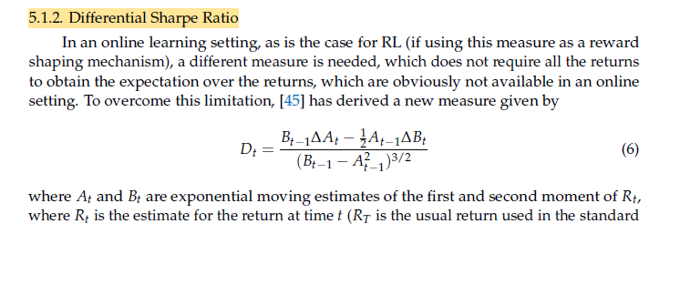
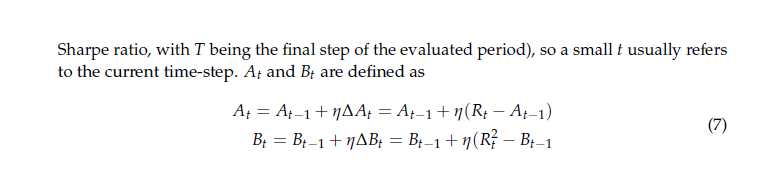
- Purpose: Establishes the exact mathematical foundation for the M3 risk-aware reward mechanism.
Mechanism Added: Action-friction control to regularize churn.
Formulation: DSR mathematically incentivizes the agent to capture tiny, high-Sharpe anomalies, leading to high-frequency action oscillation ("churn"). In live markets, slippage destroys these theoretical returns. To strictly isolate friction-control from risk-sensitivity (M3 → M4 comparison), the turnover penalty must be additive.
$$r_t = D_t - \lambda_{\text{turnover}} \cdot \sum_{i=1}^N (a_{t,i} - a_{t-1,i})^2$$
Note: This penalty $\lambda_{\text{turnover}}$ only punishes the RL reward signal to discourage churning. The actual portfolio simulation already accounts for true transaction costs in $R_{\text{net}, t}$. Comparing M3 to M4 will explicitly test the hypothesis that regularizing action outputs stabilizes the LSTM memory mechanism.
To isolate the incremental contribution of each mechanism, all models will be evaluated under the same experimental conditions:
Ablation Logic:
M1 → M2 is intended to isolate the contribution of temporal memory.M2 → M3 is intended to isolate the contribution of DSR-based risk-aware reward shaping.M3 → M4 is intended to isolate the contribution of turnover regularization.Financial time series are non-stationary, and model performance can depend strongly on the market period used for training and testing. A single static train/test split provides only one out-of-sample period and may not adequately evaluate robustness across changing market conditions. Therefore, we will use a strict walk-forward evaluation methodology:
Liu et al. 2024 "Dynamic datasets and market environments...", p. 13, Figure 5
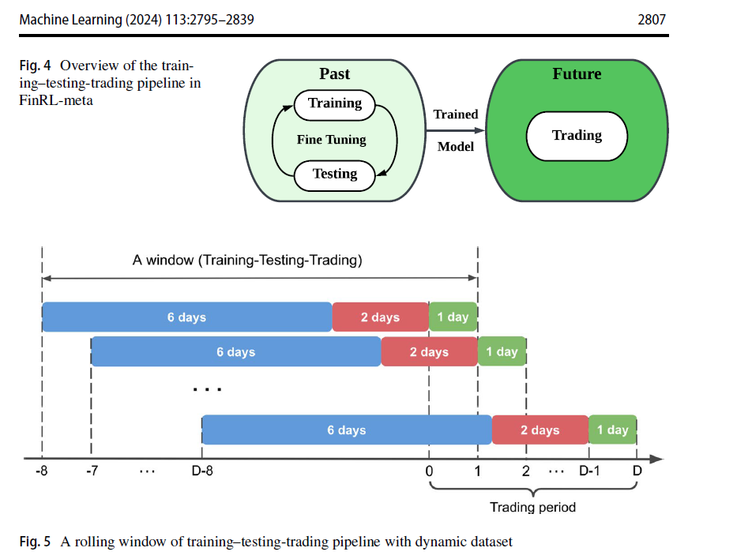
- Purpose: Provides literature grounding for the strict walk-forward methodology preventing look-ahead bias.
The final out-of-sample arrays will be concatenated and evaluated using standard quantitative finance metrics to properly assess H2 and H3:
Cumulative Return (CR): $$CR = \frac{P_{\text{end}} - P_0}{P_0}$$
Annualized Return (AR)
Sharpe Ratio (SR): $$SR = \frac{\mathbb{E}[R_P] - R_f}{\sigma_P}$$
Sortino Ratio
Maximum Drawdown (MDD): $$MDD = \max_t\left(\frac{Peak_t - V_t}{Peak_t}\right)$$
Annualized Volatility
Cumulative Transaction Cost
Turnover and transaction cost are particularly important diagnostics for evaluating the effect of M4.
Huang et al. 2024 "A Self-Rewarding Mechanism...", p. 12, Section 4.2
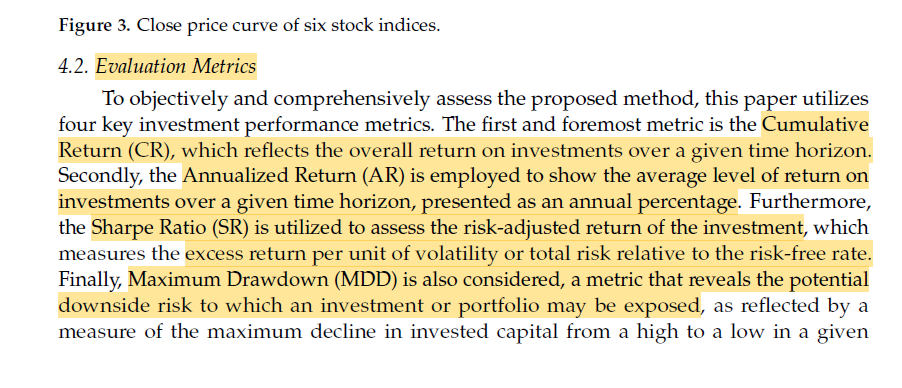
- Purpose: Academic justification of the standard financial evaluation metrics.
| Model | Architecture | Reward | Memory | Turnover Regularization | Main Question |
|---|---|---|---|---|---|
| M1 | PPO (MLP) | Net Return | None | None | Baseline performance without memory, risk shaping, or action regularization |
| M2 | LSTM-PPO | Net Return | LSTM with window $W$ selected during validation | None | Does temporal memory improve robustness and adaptability? |
| M3 | LSTM-PPO | DSR | LSTM | None | Does risk-aware reward shaping improve risk-adjusted performance? |
| M4 | LSTM-PPO | DSR | LSTM | $\lambda_{\text{turn}}\sum_i(a_{t,i}-a_{t-1,i})^2$ | Does turnover regularization reduce churn and trading costs while preserving performance? |
Execution Table:
| Dataset | Train/Test Windows | Roll Window | Transaction Cost | Seeds | Metrics |
|---|---|---|---|---|---|
| [TODO] | [TODO] | [TODO] | [TODO / literature-supported] | Multiple fixed seeds (e.g. 42, 100, 999 ~ tentative) | CR, AR, SR, Sortino, MDD, Volatility, Turnover, Cost |
The goal of this analysis is not simply "highest return wins."
We will proactively investigate and report failure modes. If a model performs poorly or becomes unstable, the analysis will examine:
Note: The observed failure modes will be used as evidence to motivate and refine the direction of BTP-2.
BTP-2 will be guided by the failure modes identified in BTP-1. Depending on the observed limitations of the final configuration, possible extensions include regime-aware or adaptive risk-sensitive DRL. More advanced extensions such as multi-agent or self-rewarding approaches will be considered in later MTP stages.
This project proposes a controlled empirical ablation study progressing from PPO to LSTM-PPO, DSR-based reward shaping, and turnover regularization. By maintaining consistent datasets, costs, training conditions, and walk-forward evaluation, the study aims to isolate the incremental contribution of temporal memory, risk-aware reward design, and turnover control. The resulting performance and failure analysis will provide an evidence-based basis for selecting the direction of BTP-2.